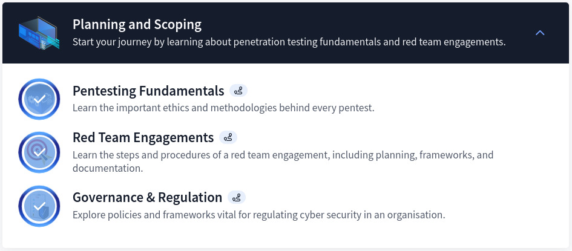

TryHackMe CompTIA PenTest+ Path — Full Review
Table of Contents
Introduction
The CompTIA PenTest+ pathway helps learners build practical skills for penetration testing and vulnerability assessment. While I lack direct experience with the PenTest+ exam, this pathway offers hands-on labs and exposure to key tools, techniques, and post-exploitation tactics relevant for offensive security.
Below, I provide an in-depth breakdown of this pathway’s content and potential outcomes.
Section 1: Planning and Scoping
This section focuses on the foundations of penetration testing emphasizing project planning, scoping engagements, and understanding governance and regulations. Upon completion of this section, I gained valuable insights into setting clear objectives, identifying clients needs, and aligning with legal frameworks to execute ethical and efficient tests. The modules covered are as such:
Disclaimer: It is crucial to understand everything (goal, objectives, documents, etc) and have full permission before engaging into any form of assessment.
Section 2: Tools and Code Analysis
Obviously, we cannot mention Penetration Test without highlighting the tools utilized for the assessment. This second section introduces key penetration testing tools such as Metasploit, Wireshark, Burp Suite, and Hydra. Moreover, it also integrates Python programming basics and its application in PenTesting. The section is structured as follow:
Note: It’s important to fully grasp the basics/fundamentals of each tool to help use it for high level assessments and performance.
Section 3: Information Gathering and Vulnerability Scanning
Focuses on reconnaissance techniques and vulnerability scanning using tools like Nmap. One of the most important phase of any PenTest is definitely the “Reconnaissance Phase”. As such, in this section, the practical side focuses on passive and active reconnaissance, host discovery, and advanced scanning methods to uncover potential weaknesses in a system. As stated previously, this section covers the below topics:
Note: You can utilized different tools for the same purpose. Example of these are Rustscan and Naabu. Check out Geeksforgeeks for more details on Reconnaissance and Foot-printing.
Section 4: Attacks and Exploits
Diving into attack execution and exploitation techniques, the section features a wide range of topics as shown below. As part of the deliverable of this section, real-world attack scenarios are simulated on both Windows and Linux environments, including Active Directory exploitation. To sum up this section in a single phrase I would say: “Time consuming but yet rewarding”.
Note: The same modules are also covered in other Pathways such as Offensive PenTesting and Red Teaming. This will therefore save time for anyone interested in completed those paths in the future.
Section 5: Core Deliverables of the CompTIA PenTest+ Pathway
There are plenty of lessons learned as well as valuable insights from this path. Below are the main takeaways of each section:
- Planning and Scoping.
- Ability to define PenTesting project goals and scopes.
- Understanding legal and regulatory compliance (e.g., GDPR, HIPAA).
- Techniques for conducting safe and authorized engagements
- Tools and Code Analysis.
- Basic understanding of Metasploit, Wireshark, Burp Suite, and Hydra.
- Hands-on skills in Python for creating custom testing scripts.
- Enhanced ability to analyze network traffic and vulnerabilities.
- Information Gathering and Vulnerability Scanning.
- Full understanding of both passive and active recon.
- Mastery of Nmap for comprehensive reconnaissance and scanning.
- Capability to identify live hosts, open ports, and misconfigurations.
- Tools and Code Analysis.
- Skills to exploit web vulnerabilities (e.g., OWASP Juice Shop).
- Understanding of privilege escalation techniques for Windows and Linux.
- Comprehension of Active Directory attacks, lateral movement, persistence, and credential harvesting.
- Attacks and Exploits.
- Skills to exploit web vulnerabilities (e.g., OWASP Juice Shop).
- Understanding of privilege escalation techniques for Windows and Linux.
- Comprehension of Active Directory attacks, lateral movement, persistence, and credential harvesting.
Conclusion
As a eJPT certified individual, I have to admit the fact that I learned new things from it (mostly Active Directory enumeration and attacks). Furthermore, the path can be a good addition for those aspiring to excel in vulnerability assessments and offensive security roles. However, Offensive PenTesting and Red Teaming pathways cover more techniques for anybody interested to explore further.
View My Certificate of Completion HERE